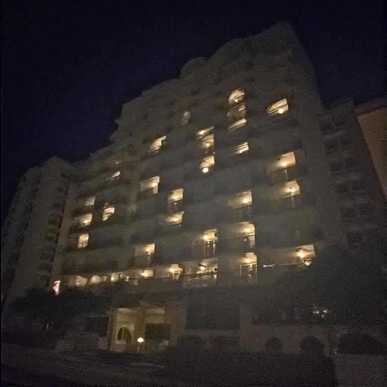
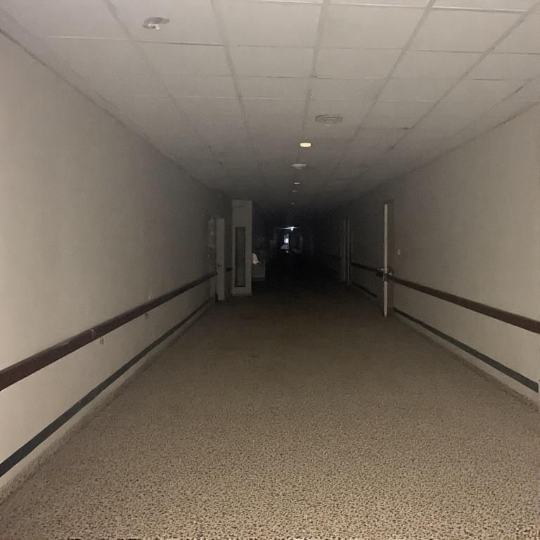

Amanda and Medora drove for hours, searching for a place to stay at. They had came to another city to attend an event which got delayed, causing them to stay in the new city for a night. “Gosh where are the hotels?” Asked Amanda as she glanced out of the window into the darkness outside. “I don’t know, lets keep driving.”

Medora continued to drive on the seemingly endless road ahead of them. Finally, after 20 minutes of driving, they arrived at an hotel which appeared to be on the outskirts of the city. The atmosphere was calm and silent, the night still young, Medora parked the car in the parking lot and both women got out. “Finally, a place to stay for the night” Amanda scoffed and picked her bag, making her way to the reception where a receptionist stood. The receptionist seemed a bit odd, his form a bit slumped as if he didn’t had the energy to work but both women didn’t pay attention to it. “We would like a room for two” Medora spoke with confidence, showcasing her experience in dealing with hotel staff. “We have.. a lot of.. rooms available.. which one would you like?” The receptionist asked in a low, monotone voice as if he was not in the mood to deal with the work he was assigned to, “Uh, just a regular room for two” Medora told the receptionist again and he handed them the keys to a room.
They made their way to the room and unlocked the door, going in, they first took in the appearance of the room. “Seems a bit old but works” Amanda gave her review as she plopped down on the bed, tossing her bag to the side. “I would say, its fine, really” Medora responded as she took her bag off as well. “Hey Med, I want to ask something” Amanda spoke and Medora’s curiosity was piqued, “Yeah sure, go ahead” Medora waited for the question. “Did you notice the odd behaviour and tone of the receptionist?” Amanda inquired and Medora nodded, “Yeah, maybe he was just tired working all day” Medora gave her explanation which Amanda accepted. Medora made her way to the bathroom and as she opened the door, she found the bathroom in a poor condition. “Yep, this is definitely not well kept” She said and Amanda groaned, “No don’t tell me the bathroom is dirty” To her horror, it was. “Unfortunately, it is” Medora said with an annoyed chuckle and Amanda rolled her eyes.
“Seriously, I’ll die by the bad smell” Amanda playfully whined and Medora nudged her with a smirk, “You won’t die, you’re too young to die” Amanda smirked back and playfully struck a pose, “Too diva to die.” Both women laughed but their laughter died down when suddenly, the door opened and the receptionist came in without knocking. “Sorry to disturb, I have called the staff to clean the bathroom” He spoke in his same monotone voice. Medora and Amanda jumped slightly from the sudden contact, “Excuse me, you could’ve knocked first” Medora said, trying to regain her composure. The receptionist didn’t apologise but subtly nodded and then closed the door, going away.
“What the heck? Why did he just burst in like that and then leave?” Amanda asked but Medora had an even important question, “Most importantly, how did he knew that our bathroom was dirty? We didn’t even call the receptionist.” A chill ran down their spine, their eyes widening in horror. “Check if there are any hidden cameras in our room” Amanda said as she quickly got to check. Medora assisted her but the two found no hidden cameras. However, the sudden encounter left them a bit unsettled. “Something is wrong with that guy” Amanda muttered to which Medora shook her head.
Later that night, the two were going to sleep, Medora laid down in her bed and Amanda laid down across her on her own bed. “Goodnight” They both wished to each other before going to sleep.
While sleeping, Amanda was disturbed by Medora waking her up. “Hey Amanda, can you come with me to the bathroom? I am scared of the dark” Medora said in a low voice, Amanda shifted in her bed, groaning lightly, “Just turn on the lights, lady” Amanda said as she rubbed her eyes. Eventually, she got up and followed Medora to the bathroom, “Literally, what is there to be scared off?” Amanda asked in a slightly annoyed tone and Medora giggled, “Sorry, you know me, I get scared easily” Amanda rolled her eyes but then she asked, “Hey, I am feeling thirsty and there is no water in the room, mind coming with me to the cafeteria in the main lobby?”
Medora smirked and couldn’t help but tease, “Oh, scared now, are we?” Amanda groaned, “Ugh just stop” She said as she opened the door and went outside in the empty hallway, Medora followed close behind. Both women entered the elevator to go to the first floor where the cafeteria was, the elevator started with a hum of machinery as they stood in silence. “Wait, look” Medora pointed at the buttons and Amanda noticed that floor number 13 was missing.
“Huh? Why is an entire floor missing from the buttons?” Amanda’s brow raised up in confusion as she looked at the buttons again. Suddenly, The lights flickered inside the elevator and it started shaking, “OH MY GOD!!!” Medora screamed as she instinctively grabbed onto Amanda’s arm. Amanda glanced up at the screen which showed the floor number and her blood ran cold, the screen displayed -number 13- in a glitched manner. The shaking stopped and the lights returned back to normal. The doors slid open calmly, revealing a hallway in front of them, abandoned and shrouded in darkness. The only sounds they could hear were their own ragged breaths. “What should we do?” Amanda asked Medora as she looked ahead with wide, terrified eyes.

Medora took a tentative step forward and stood in the hallway, the cool air making her shiver slightly. “Medora, wait” Amanda spoke but she also followed Medora into the creepy hallway.
Medora glanced around with wide eyes, “What happened here?” She asked as she couldn’t believe that the hotel was hiding this floor, but for what reason? She didn’t knew. They ventured further into unchartered territory, finding nothing more than locked doors and empty, creepy hallways. “You want to explore more?” Amanda asked Medora and she looked back at her. “We can explore more, I am curious to know why the hotel is hiding this floor” Medora replied. A sound startled the two women, it came from the end of the hallway but they couldn’t make out what type of sound it was. They both went towards the source of the sound but then suddenly stopped dead in their tracks. They spotted, a figure...
It was standing there motionless, it seemed like a female judging by its appearance. Amanda’s breath hitched and Medora’s eyes widened. “Hello? Mam” Amanda spoke with trembling voice as she hoped to get a response from the figure. The woman turned around and revealed her grotesque features, her face twisted and her eyes pitch black. “Oh my god!” Medora gasped, taking a step back, her heart racing. The woman let out a blood-curdling scream and started running towards them. The two women screamed in fear and bolted back to the elevator as fast as they could. “KEEP RUNNING” Amanda yelled as she paced. Medora could feel adrenaline coursing through her veins as she ran, her heart hammering against her rib cage.
They reached the elevator, frantically clicking the buttons and the door closed just before the possessed woman reached them. Arriving back at first floor, the two ran back to their room and grabbed their items, quickly leaving the hotel overnight. Amanda and Medora were free from whatever that creature was, but were left deeply unsettled by the events that occurred that night.